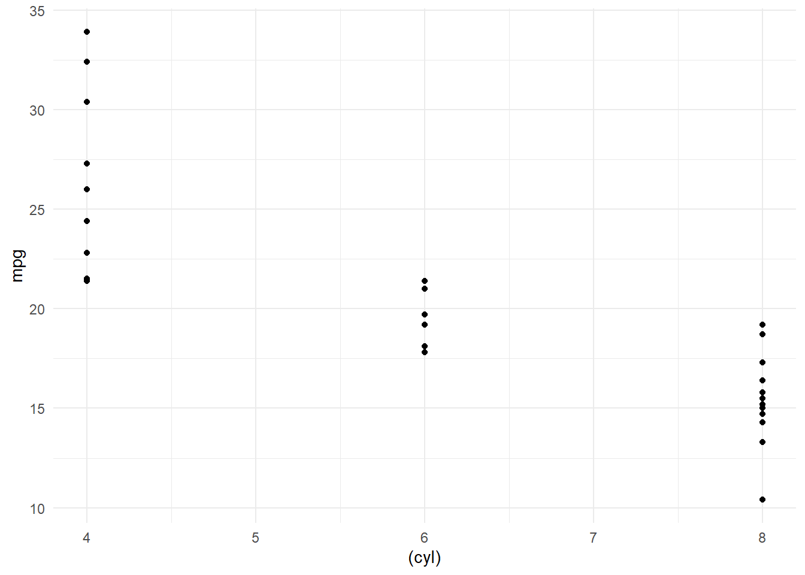

Graficando
Scatter plots
Con tres (3) variables cuantitivas
Agregaremos una linea de ajuste usando el modelo lineal general + los respectibos intervalos de confianza de las bandas.

¿La relación entre x e y es igual entre los distintos sujetos en estudio? ¿qué sucede al tomar en cuenta otra varible, por ejemplo, cualitativa?
Veamos
Graficando cuatro (4) variables en un mismo plot
Se puede controlar el tamaño del punto ploteado, el color y el relleno de acuerdo a los valores que tomen ciertas variables

En ocasiones cuando una o las dos variables a graficar son categóricas,podemos presenciar overplotting, causando que no dimensionemos claramente el fenómeno estudiado. Para resolver lo anterior, podemos introducir un pequeño ruido en la representación de los puntos y aplicar un alpha (valor que regula la transparencia de los markers) y así lograr ver mejor la relación entre las variables.
Veamos sin jitter ni alpha

Notemos que aunque cyl es una variable discreta, R le da un tratamiento continuo y por eso vemos espacios entre 4 y 5 o 6 y 8, lo cual no tiene sentido. Reparemos esto, además de agregar jitter y opacidad a los puntos.
Con jitter y alpha = 0.2
Podemos usar una variable cuantitativa como size y así enriquecer nuestro gráfico, además que la forma cambie de acuerdo al valor de una variable (discreta)
Gráficos dinámicos
Un gráfico hecho con ggplot puede ser convertido en uno dinámico con la función ggplotly() de la librería plotly
Copyright © 2020 Raúl Galíndez, Inc. All rights reserved.